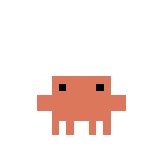
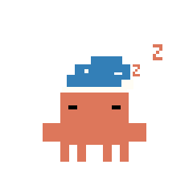

Fix 1 of 3
“Claude waited 40 minutes for me to click Allow.”
A chime, a desktop notification and a red strip the moment Claude needs you, plus a second ping after 5 minutes.

Swiss KnifeA free mod. One-line install. No coding.
/plugin install swiss-knife --marketplace nocodehack/swiss-knife
Fix 1 of 3
A chime, a desktop notification and a red strip the moment Claude needs you, plus a second ping after 5 minutes.
Fix 2 of 3
5-hour and weekly gauges with a forecast: “At this pace your 5-hour limit runs out around 15:10.”
Fix 3 of 3
Every message re-reads the whole chat. At ~70% full, one click writes a handoff note. Open a new chat and Claude picks up exactly where you left off. No /clear.
Each one can be turned on or off in Settings.

In a terminal: claude update
/plugin install swiss-knife --marketplace nocodehack/swiss-knife
Mods install through Claude Code’s plugin system, so the command says plugin.
In the desktop app: + → Plugins → Add marketplace → nocodehack/swiss-knife